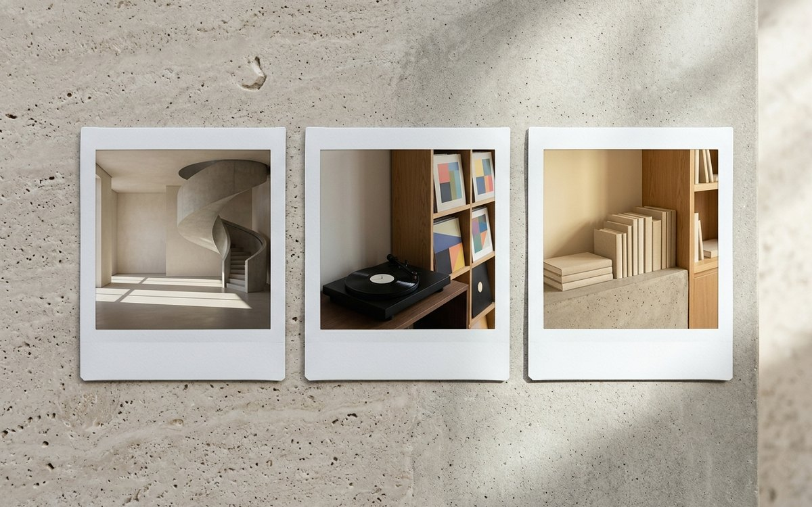
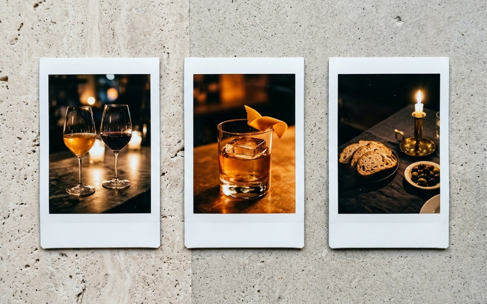
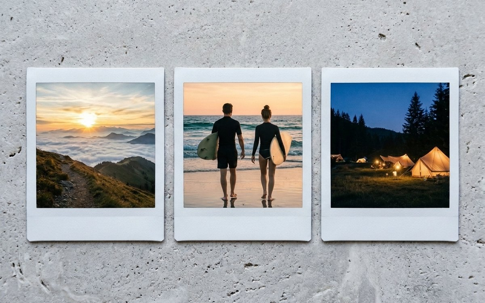
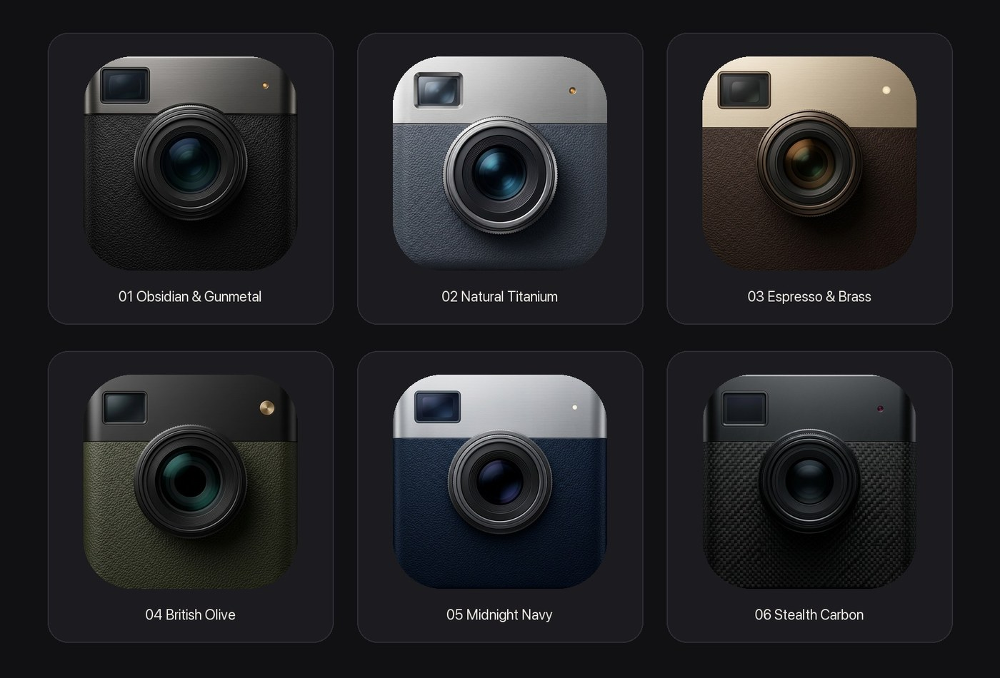
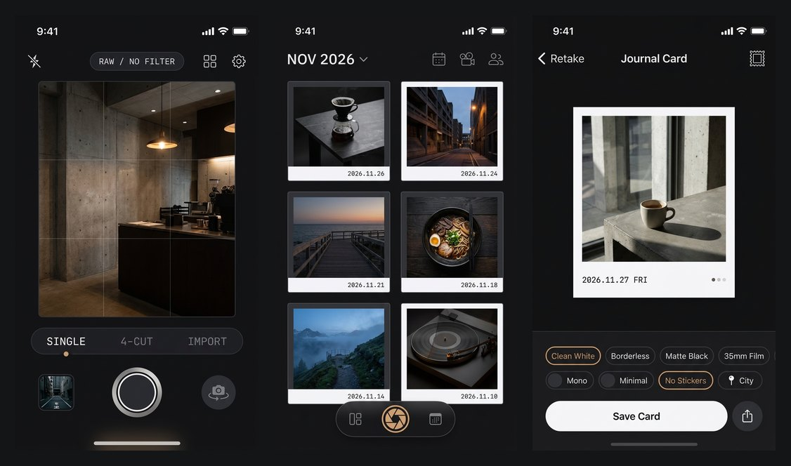

🌱 免費就能用
IDEA 20
🎨 看展・美術館・獨立書店＆黑膠日記
「看了好多特展、逛了選物店跟黑膠行，半年後卻完全忘記那場展的名字…」
不加多餘裝飾，用乾淨白框配日期收下美術館光影、空間雕塑與剛入手的黑膠封面，自動排成一面你的私人藝文選物誌。
🖼️ 純淨選物牆📅 日期自動歸檔🔍 月份快速回翻
看展、聽黑膠、微醺小酒館、全黑銀飾穿搭、攻頂衝浪——不用貼可愛貼紙，只留乾淨白框與日期，就能把酷帥的每一天收進只屬於你的質感手帳。


🌱 免費就能用「看了好多特展、逛了選物店跟黑膠行，半年後卻完全忘記那場展的名字…」
不加多餘裝飾，用乾淨白框配日期收下美術館光影、空間雕塑與剛入手的黑膠封面，自動排成一面你的私人藝文選物誌。

🌱 免費就能用「在巷口小酒館喝到超驚豔的一杯自然酒或調酒，拍完沉在相簿再也找不到！」
微暗燈光下也能自動連拍提亮降噪，拍下燭光下的酒杯、酒標與深夜小點，直接存成帶日期的私房微醺酒吧地圖。
 🌱 免費就能用
🌱 免費就能用
「喜歡全黑、金屬與冷調極簡，最怕可愛風貼紙毀掉照片原本的高級感。」
保留冷調光影與俐落白框，記錄每天搭的香水瓶、銀戒、墨鏡、黑皮包與中性西外穿搭，一個月自動長出一面冷調 Lookbook 月曆。

🌱 免費小電影 ＋ ★ VIP 地圖「爬完山、衝完浪或聽完音樂祭累到癱，根本沒力氣熬夜剪影片寫長文。」
隨手拍下山頂雲海、浪花與暮色山陵，週末自動挑精華配樂剪成小電影；VIP 還能把攻頂與跑過的海岸城市點亮在足跡地圖上！
除了可愛小狐狸，我們也為喜歡冷調極簡的你準備了進階風格：v1.1 即將推出一鍵切換「簡約風格」（無濾鏡、不自動配貼紙、純白框配打字機日期）；v1.2 規劃加入極簡深色介面與 6 款金屬皮革質感相機圖示，放進質感桌面毫不違和！


Art exhibitions, vinyl records, candlelit natural wine bars, black-and-silver looks, and mountain-to-surf weekends—keep crisp white frames with zero cute clutter.
“I visit so many exhibitions and record shops, then forget the artist’s name six months later…”
Keep crisp unadorned white frames with clean dates. Gallery light, sculptural spaces, and new vinyl finds line up into your personal culture magazine.
“That unforgettable orange wine or candlelit cocktail always gets lost in my camera roll.”
Auto low-light capture keeps moody bar lighting crisp without harsh flash. Build a dated private list of every great wine bar and late-night pour.
🌱 Free
“I love monochrome blazers, silver jewelry, and cool shadows—cute stickers ruin the mood.”
Skip stickers completely and keep sharp white borders. Your daily fragrance, silver rings, leather bags, and sharp outfits turn into a sleek monthly lookbook.
“After a sunrise hike or surf session, I’m happily exhausted—zero energy to edit videos.”
Snap cloud-sea ridges, dusk waves, and golden festival skies. MoriSnap cuts your weekly highlight movie automatically, and VIP maps every coast and peak city you conquer.
Love a refined, gallery-minimal look on your Home Screen? v1.1 adds one-tap Minimal Style (no filter, no auto-stickers, clean white frame + typewriter date); v1.2 is planned to bring Matte Minimal Dark UI and 6 metallic/leather camera icons that look right at home beside your favorite design apps.
美術館やレコード店、キャンドル灯るワインバー、モノトーン＆シルバーアクセ、登山やサーフィンまで。かわいい装飾なしで洗練された記録が残ります。
「素敵な展示やレコード店を巡っても、半年後にはタイトルを忘れてしまう…」
装飾なしの白枠と日付だけで、美術館の光と影や手に入れたレコードを保存。見返すたびにときめく、自分だけのカルチャーマガジンが育ちます。
「路地裏のワインバーで出会った忘れられない一杯、アルバムの奥で迷子に…」
暗い店内でも自動で明るくノイズを抑えて撮影。キャンドルに揺れるグラスや夜の一皿を日付入りでまとめ、とっておきの行きつけリストに。
🌱 無料で使える
「オールブラックやシルバーアクセのクールな空気感を、かわいいスタンプで崩したくない。」
ステッカーなしで潔く撮るだけ。お気に入りの香水瓶、シルバーリング、ジャケットコーデがそのまま洗練されたルックブック・カレンダーになります。
「山頂や海から帰ると心地よい疲れで、動画編集する気力までは残らない…」
雲海の朝焼けや夕暮れの波をパッと撮っておけば、週末に自動で音ハメムービーが完成。VIP なら訪れた海辺や山の街も足あとマップに残せます。
クールな世界観が好きな方のために、v1.1 ではワンタップで「シンプルスタイル」（無フィルター・自動ステッカーなし・白枠＋タイプライター日付）を搭載予定。さらに v1.2 ではミニマルダーク UI と金属＆レザー調のカメラアイコン 6 種も企画中です！
미술관 전시와 바이닐, 촛불 아래 내추럴 와인 바, 올블랙·실버 액세서리, 등산과 서핑까지. 군더더기 없는 화이트 프레임으로 담백하게 모아보세요.
“좋았던 전시와 바이닐 숍을 다녀와도 몇 달만 지나면 작가 이름이 가물가물해요…”
장식 없는 깔끔한 화이트 프레임과 날짜만으로 미술관의 빛, 공간, 새로 들인 바이닐 커버를 모아 나만의 아트 매거진 벽을 만들어 보세요.
“골목 와인 바에서 마신 인생 와인, 찍어두고 앨범 속에서 다시 못 찾겠어요!”
어두운 바에서도 자동으로 빛을 모아 또렷하게 담아줍니다. 촛불 아래 와인 잔과 플레이트를 날짜별로 정리해 나만의 아지트 리스트를 완성하세요.
🌱 무료 사용
“올블랙 블레이저와 실버 주얼리의 차가운 무드를 귀여운 스티커로 깨고 싶지 않아요.”
스티커 없이 깔끔한 테두리만 유지하세요. 매일의 향수, 실버 링, 선글라스와 시크한 아웃핏이 근사한 월간 룩북 달력으로 쌓입니다.
“정상 찍고 서핑하고 돌아오면 뿌듯하게 지쳐서 영상 편집할 힘이 없어요.”
운해 일출과 노을 파도를 찰칵 남겨두면 주말마다 비트 영상이 자동 완성! VIP에서는 정복한 산과 바다의 도시들도 발자국 지도에 밝혀보세요.
시크한 홈 화면을 원하는 분들을 위해 v1.1에서는 원탭 '심플 스타일'(무필터·자동 스티커 끔·화이트 프레임+타자기 날짜)이 추가되며, v1.2에서는 매트 다크 UI와 메탈·가죽 질감 카메라 아이콘 6종을 기획 중입니다!